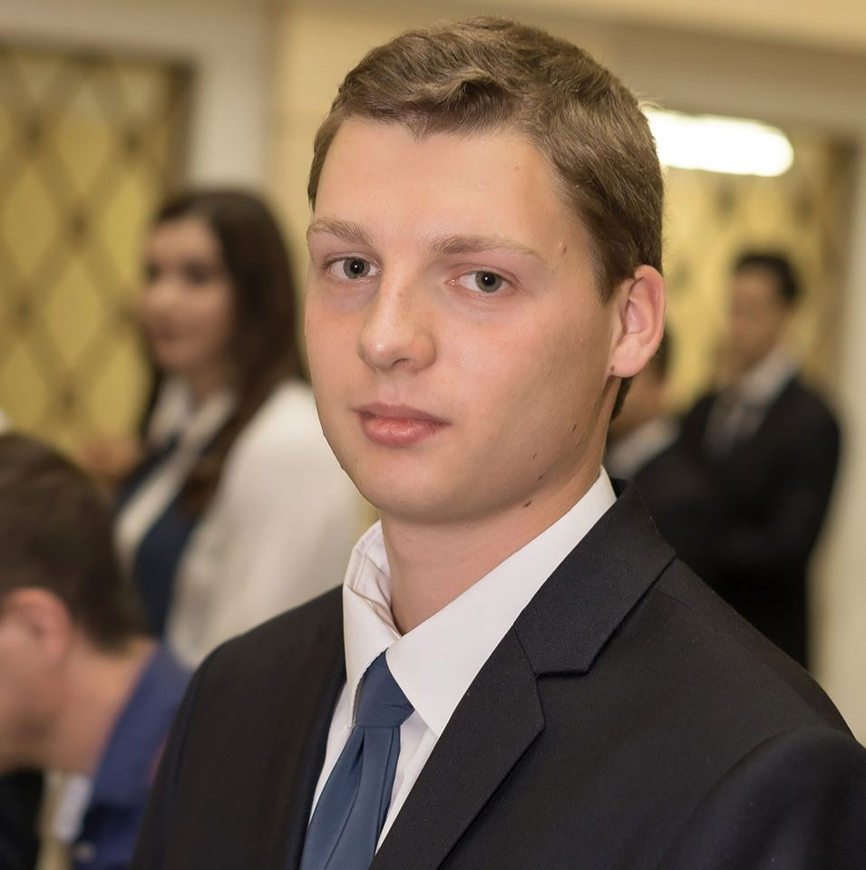
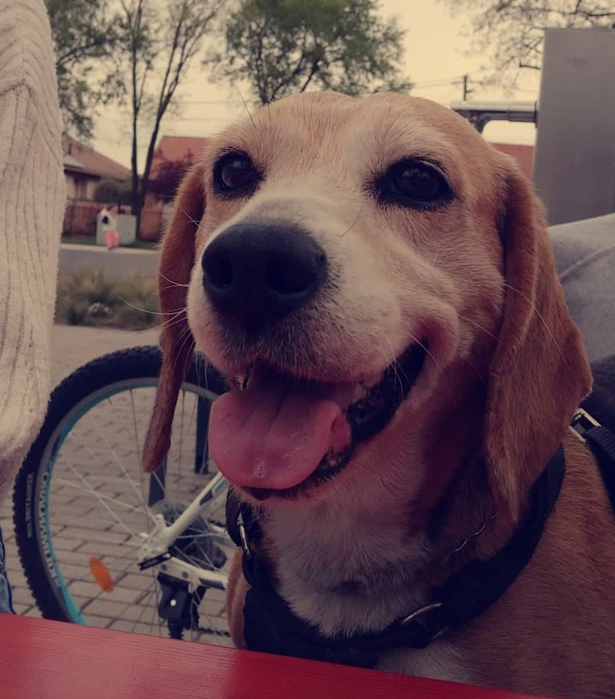

Bemutatkozás

Fodor Tamás vagyok, 2001. február 15-én, Debrecenben születtem, azóta családommal ugyanitt (a Csapókertben) lakom, de első lépéseimet Torinóban tettem meg (egy évig laktunk ott kiskoromban). Itt jártam óvodába (Debreceni Kuruc Utcai Óvoda), általános iskolába (Debreceni Kinizsi Pál Általános Iskola) és gimnáziumba (Debreceni Egyetem Kossuth Lajos Gyakorló Gimnáziuma és Általános Iskolája).
Kiskoromban évekig úsztam, majd kipróbáltam a tollaslabdát, de végül a foci tetszett meg a legjobban és azt a mai napig hobbi szinten űzöm barátaimmal.
A focit nem csak játszani szeretem, hanem nézni is, kedvenc csapatom a Juventus és már volt szerencsém élőben is ellátogatni egy hazai meccsükre. Barátaimmal is szoktunk összeülni meccset nézni, a Bajnokok Ligája döntőit rendre nálunk nézzük.
Általános iskolás koromban egy évig gitároztam és pár évig zongoráztam is, de ekkor már látszott, hogy ami igazán érdekel az az informatika világa.
Szabadidőmben szeretek zenét hallgatni. Kedvenc műfajaim a rock, punk-rock és a pop-punk. Kedvenc együtteseim a Green Day (akiket szintén sikerült élőben látnom Budapesten), a Tankcsapda és a Bowling for Soup.
Családommal és barátaimmal nagyon szeretek utazni külföldön és belföldön egyaránt. Inkább az aktív kikapcsolódásokat szeretem, mint a túrázás és a városnézés.
Esténként néha szoktam a barátaimmal discordon beszélgetni, esetenként játszani is. Leggyakrabban a Tom Clancy's Rainbow Six Siege-el szoktunk játszani. Az én kedvenc játékaim a menedzsment játékok.
Esténként a kiskutyámmal szoktam sétálni menni, illetve játszani. Ő egy 10 éves trikolor beagle kutyus.